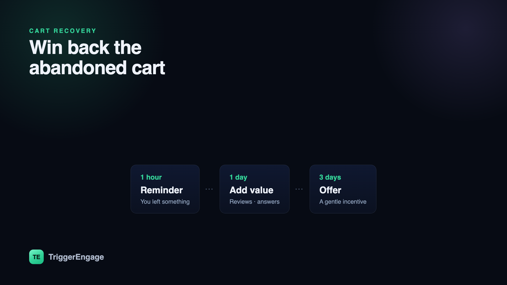

Roughly seven in ten online carts are abandoned. That is not a rounding error — it is the single biggest pool of nearly-won revenue most stores have. The good news is that a huge share of those shoppers were interested enough to add to cart in the first place; they got distracted, hesitated, or hit a small snag at checkout. A well-built abandoned cart email sequence reaches them while that intent is still warm and quietly recovers sales you have already earned. Here is how to build one that works.

Why cart recovery is the highest-ROI email you can send
Most marketing email starts cold: you are interrupting someone to introduce a product they were not thinking about. Cart recovery is the opposite. The recipient chose the product, configured it, and got most of the way to buying. You are not creating demand — you are removing the last inch of friction between demand and a purchase. That is why cart emails routinely post conversion rates several times higher than a broadcast newsletter, and why they are almost always the first automated flow a store should build. Running a store on a hosted tool? See how the options stack up in TriggerEngage vs Klaviyo.
The mechanics matter, though. A cart email that arrives three days late, addresses no one in particular, and leads with a 20% code will underperform and slowly erode your margins. The difference between a flow that recovers 10% of carts and one that recovers 30% is timing, relevance, and restraint.
Trigger it off behavior, not a schedule
A cart recovery flow is a textbook case of event-based email: it should fire from what the shopper does, not from a calendar. The trigger is an add_to_cart (or checkout_started) event that is not followed by a purchase event within a set window. Capture the cart contents on that event — items, quantities, total, and a link back to the pre-filled cart — so every message can show exactly what was left behind.
Equally important is the exit. The instant a purchase event arrives, the shopper must drop out of the sequence. Nothing burns goodwill faster than a "you left something behind!" email that lands an hour after someone bought it. Set a goal on the flow tied to the purchase event so recovery stops the moment it succeeds — the same discipline that keeps win-back messaging from annoying customers who have already returned.
The three-email sequence that works
You do not need a ten-touch epic. Three well-timed messages, each with a distinct reason to return, recover the overwhelming majority of recoverable carts.
Email 1 — the reminder (~1 hour)
Send the first email about an hour after abandonment. Keep it simple and helpful in tone: "Still thinking it over? Your cart is saved." Show the items, a clear image, and one obvious button back to checkout. No discount, no pressure — most people just got interrupted, and a friendly nudge with a working link is all they need. This first touch does the heavy lifting.
Email 2 — handle the hesitation (~1 day)
If the cart is still open a day later, the shopper is weighing something. Use this email to answer the unspoken objection: surface reviews and ratings, highlight your return policy or shipping guarantee, or address a common question about sizing, compatibility, or delivery time. This is where personalized content earns its keep — reference the exact product they were considering, not a generic "your items."
Email 3 — the final nudge (~3 days)
The last email creates a gentle reason to act now. That can be genuine scarcity ("only a few left"), a reminder that the cart will expire, or — if your margins allow and the objection is clearly price — a modest incentive. Keep the incentive for this message only, and frame it as a one-time gesture rather than a standing offer.
| Timing | Job | Incentive? | |
|---|---|---|---|
| 1 · Reminder | ~1 hour | Bring them back with a working link | No |
| 2 · Reassurance | ~1 day | Answer the objection (reviews, policy) | No |
| 3 · Nudge | ~3 days | Add urgency or a final incentive | Maybe |
Go multi-channel — carefully
Email is the backbone of cart recovery, but it is not the only channel. If a shopper has opted in, a single well-timed push notification or SMS can reach someone who never opens the email — and for high-intent moments like an abandoned checkout, that reach converts. The rule is restraint: pick one alternate channel per shopper, not all three at once, and never let a customer receive the same nudge on email, push, and SMS simultaneously. Match the channel to the moment and cap total frequency so recovery never tips into harassment.
Don't spray — segment
Not every abandoned cart deserves the same treatment. A returning customer abandoning a $30 reorder needs a lighter touch than a first-time visitor stalling on a $400 purchase. Use behavioral segmentation to tune the flow: reserve incentives for high-value or first-time carts, skip the discount for loyal repeat buyers who will come back anyway, and suppress the sequence entirely for anyone already in an active drip campaign so you do not double-message. Segments that update themselves from your event stream keep this targeting current without manual list-building.
Measure recovery, not opens
The only metric that matters for this flow is recovered revenue: of the carts that entered the sequence, what share converted, and what did that conversion earn? Track it against a holdout of abandoners who receive nothing, so you can prove the flow's true incremental lift rather than crediting it for purchases that would have happened anyway. Open and click rates are useful for tuning subject lines and copy, but they are means, not the end. If you want a fuller picture of the funnel these emails move people through, see our guide to the email metrics that actually matter.